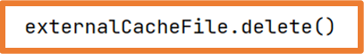

La persistencia de datos es un asunto muy importante en las aplicaciones móviles.
La primera razón es conocida por todos y ocurre cuando se cambia la orientación/configuración del dispositivo, esto se ha solucionado con el uso de estados
y de ViewModel.
Pero existen otras situaciones donde es interesante poder guardar los datos para su posterior uso.
En esta unidad se estudiarán las siguientes herramientas para implementar la persistencia de datos:
File System.
Datastore.
Room.
File System
Como en cualquier sistema operativo, Android usa un sistema de archivos (File System).
Este sistema de archivos permite varias opciones para guardar los datos de la aplicación:
Almacenamiento específico de la aplicación (App-specific storage).
Almacenamiento compartido (Shared storage).
Preferencias.
Bases de datos.
Almacenamiento específico de la aplicación (App-specific storage)
Almacena archivos destinados solo para el uso desde la propia aplicación.
Se pueden crear carpetas dedicadas en el almacenamiento interno y en el externo.
Se debe usar el almacenamiento interno para información confidencial (otras Apps no tendrán acceso a él).
Almacenamiento compartido (Shared storage)
Almacena archivos que la aplicación puede compartir con otras aplicaciones como son documentos, media (audio, vídeo…) u otros archivos.
Preferencias
Almacenamiento privado para la aplicación. Permite pares clave-valor.
Bases de datos
Almacena datos estructurados de manera privada usando la librería Room (framework que usa SQLite)
A la hora de elegir un tipo de almacenamiento entran diferentes variables:
Tamaño de los datos a almacenar: el almacenamiento interno tiene espacio limitado.
Asegurar el acceso a los datos: mejor el almacenamiento interno o una base de datos ya que no siempre se tiene acceso al almacenamiento externo.
Tipo de datos: si no se deben compartir los archivos se debe usar el almacenamiento específico de la aplicación.
Privacidad de los datos: si se trabaja con datos sensibles se deben almacenar en las preferencias, en una base de datos o el almacenamiento interno. Este último además oculta los datos a los usuarios.
Alamacenamiento Específico de la app
Android ofrece las siguientes localizaciones destinadas para uso exclusivo de la aplicación.
Directorios en el almacenamiento interno:
Android evita que otras aplicaciones accedan a estas ubicaciones.
A partir de Android 10 (API 29) y superiores estas ubicaciones están encriptadas.
Son un buen lugar para almacenar datos sensibles.
Suelen tener poca capacidad.
Directorios en el almacenamiento externo:
Son ubicaciones destinadas al uso exclusivo de la aplicación aunque otras aplicaciones con los permisos adecuados podrían acceder a esas ubicaciones.
Si se van a crear archivos destinados a ser compartidos con otras aplicaciones, estos deberían crearse en el espacio compartido del almacenamiento externo.
Las dos opciones incluyen un directorio para almacenar archivos persistentes y otro para caché.
Acceso a archivos del almacenamiento interno
Los archivos comunes y persistentes se encuentran en un directorio al que se puede acceder utilizando la propiedad
filesDir de un objeto contexto (como ya se ha visto anteriormente se puede obtener
el contexto de diferentes maneras).
Mediante la API File (similar a Java) se puede acceder a los archivos y almacenar archivos.
Para que el rendimiento de la aplicación no se vea afectado no se debe abrir y cerrar el mismo archivo muchas veces.
A continuación se muestra como abrir un archivo con la API:
Almacenar un archivo usando un Stream
Como alternativa a la API File se puede utilizar el método openFileOutput() para conseguir un objeto
FileOutputStream que permite escribir en un archivo dentro del directorio filesDir.
Desde Android Studio desde el Device File Explorer se pueden ver los archivo creados:
data -> data -> nombredelpaquete -> files
En versiones Android 7 (API 24) o superiores en el caso de no indicar el Context.MODE_PRIVATE se obtendrá una excepción de seguridad
Si se quiere permitir que otras aplicaciones accedan a los archivos del almacenamiento interno se debe usar un
FileProvider
al que se le debe indicar el atributo FLAG_GRANT_READ_URI_PERMISSION.
Para leer el contenido de un archivo se usa el método openFileOutput()
para obtener un objeto BufferedReader que devuelva una secuencia de cadenas (una por cada línea del archivo):
Visualizar lista de archivos
Se puede obtener un array con los nombres de los archivos del directorio filesDir utilizando el método fileList():
Subdirectorios
Si es necesario se pueden crear subdirectorios con el método getDir().
Este método también permite acceder a los subdirectorios creados.
Este método tiene un pequeño inconveniente y es que crea el directorio con el prefijo app_
y fuera del directorio files:
Para crear subdirectorios dentro de files se pueden utilizar las funciones de la clase File como en Java.
Cache
Si se tienen que almacenar temporalmente archivos con datos sensibles se deben almacenar en el directorio chache.
Para crear un archivo en almacenamiento cache se utiliza
File.createTempFile(), se debe indicar el prefijo (nombre),
el sufijo (extensión, por defecto .tmp) y un objeto contexto:
Para acceder a los archivos ubicados en el directorio cache se debe usar la propiedad cacheDir sobre un contexto y la clase
File:
La gestión del directorio cache la gestiona Android,
si la aplicación se queda sin espacio entonces Android eliminará archivos almacenados en ese directorio.
Es posible eliminar archivos del directorio cache usando uno de los siguientes métodos.
Usando un objeto File y el método delete:
Usando el método deleteFile sobre el contexto:
Acceso al almacenamiento externo
Si se necesita un espacio extra para almacenar archivos específicos de la aplicación se puede usar el almacenamiento externo siempre que esté disponible.
El almacenamiento externo puede ser una partición en la memoria interna pero también puede ubicarse en un dispositivo de almacenamiento externo conectado como puede ser una tarjeta SD o incluso un pendrive conectado al USB.
En las ocasiones en las que el almacenamiento externo se ubica en un dispositivo de almacenamiento conectado, este almacenamiento puede dejar de estar disponible, por ejemplo una tarjeta SD que se extrae del dispositivo.
Así que no es conveniente crear en el almacenamiento externo archivos de los que dependa el funcionamiento correcto de la aplicación.
Verificar la disponibilidad del almacenamiento externo
Es importante verificar que el almacenamiento externo esté disponible antes de intentar leer o guardar información en él.
Mediante la clase Environment y su método getExternalStoragareState
se puede consultar la disponibilidad del almacenamiento externo así como los permisos sobre él.
Si el estado es MEDIA_MOUNTED se tendrán permisos de lectura y escritura,
si el estado es MEDIA_MOUNTED_READ_ONLY solo se tendrán permisos de lectura.
Una buena manera de comprobar esto sería con las funciones siguientes:
Seleccionar una ubicación del almacenamiento externo
Como el almacenamiento externo puede estar tanto en la memoria interna como en un dispositivo conectado,
a la hora de almacenar información en el almacenamiento externo se debe elegir la ubicación.
Para acceder a las ubicaciones se debe usar la clase ContextCompat y su método getExternalFilesDirs.
De esta manera se obtendrá un array con todos los volúmenes disponibles.
Por norma general el primer elemento del array será el volumen principal de almacenamiento externo
y es el que se debe usar a menos que esté lleno o no disponible.
Con el siguiente código se obtendría la ruta del volumen principal del almacenamiento externo.
Comprobando el tamaño del array externalStorageVolumes se podría conocer si existe algún volumen más.
En el emulador usado en clase la posición 1 del array es la emulación de una tarjeta SD conectada al dispositivo virtual.
Acceder a los archivos del almacenamiento externo
Para acceder a los archivos del almacenamiento externo se debe usar el método getExternalFilesDir
de un objeto contexto.
>
Para que el rendimiento de la aplicación no se vea afectado no se debe abrir y cerrar el mismo archivo muchas veces.
En Android 11 (API 30) y superiores no se permite crear subdirectorios en el almacenamiento externo.
Crear archivos en la caché del almacenamiento externo
Para crear un archivo en la caché del almacenamiento externo se utiliza la propiedad externalCacheDir de un objeto
contexto:
Eliminar archivos de la caché del almacenamiento externo
Se debe usar el método delete sobre un objeto de la clase File que represente al archivo a borrar.

Contenido multimedia
Si la aplicación funciona con archivos multimedia que no son indispensables pero sí aportan valor a la experiencia de usuario,
lo mejor es almacenarlos en el almacenamiento externo:
Para el buen funcionamiento de la aplicación es importante utilizar los nombres de directorios que aporta la API
con las constantes de la clase Environment:
Si ninguno de los nombres predefinidos se adapta a las necesidades de la aplicación se puede pasar null al método
getExternalFilesDir.
De esta manera se almacenarán los archivos directamente en el directorio raíz del almacenamiento externo específico de la aplicación.
Consulta espacio libre
Algunos dispositivos tienen un espacio de almacenamiento muy limitado por lo que
al desarrollar una aplicación se debe tener especial cuidado con el espacio que ocupa la aplicación.
Una buena práctica antes de almacenar un archivo es comprobar si el archivo cabe en el espacio disponible.
Pero no es necesario comprobar el espacio libre entre otras razones porque hay veces que no se sabe cuánto va a ocupar el archivo,
en estos casos se puede intentar guardar el archivo capturando la excepción IOException
que se lanzará si no se consigue almacenar el archivo.
Para comprobar el espacio libre que puede proporcionar el dispositivo se utiliza el método getAllocatatableBytes.
Este método en ocasiones puede mostrar más capacidad de la real debido a que es posible que el sistema haya detectado archivos
en la caché de otras aplicaciones y si fuera necesario los borraría.
Si hay espacio suficiente se debe usar el método allocateBytes.
Si no se usa este método la app puede solicitar al usuario que elimine archivos o que borre toda la caché del dispositivo.
El siguiente código muestra cómo obtener el espacio libre del dispositivo:
DataStore
DataStore permite almacenar en el dispositivo conjuntos de datos pequeños o simples.
Los datos almacenados con DataStore se guardan en el almacenamiento interno específico de la aplicación
por lo que ninguna otra aplicación podrá acceder a ellos.
Proto DataStore: almacenar objetos (instancias de clases).
Debido a la complejidad de desarrollo de Proto DataStore, en clase solo se estudiará Preferences DataStore.
DataStore permite crear archivos para guardar información, generalmente preferencias.
La ventaja de DataStore radica en que es el sistema operativo el que maneja toda la gestión de los archivos de preferencias.
Reglas para usar DataStore:
Solo mantener una instancia de DataStore abierta sobre el mismo archivo.
El tipo genérico de DataStore debe ser inmutable.
No mezclar nunca SingleProcessDataStore y MultiProcessDataStore para el mismo archivo.
Preferences DataStore
Preferences DataStore permite almacenar pares clave-valor.
Los datos que se pueden almacenar serán de tipos básicos:
Int
Double
String
Boolean
Float
Long
Además se ofrece la posibilidad de almacenar un conjunto de cadenas:
Set<String>
Lo más habitual es que las preferencias se guarden y recuperen desde el ViewModel para poder mantener las variables de estado de manera correcta.
Así, para mantener una buena estructura de archivos en el proyecto se recomienda crear un paquete llamado preferences
donde se ubicará una la clase en la que se implementará toda la lógica de guardado y recuperación de los valores de las preferencias.
Esta nueva clase se utilizará desde el ViewModel correspondiente.
Preferences DataStore hace uso de corrutinas y de Flows (flujos de datos).
Los Flow permiten emitir varios valores de manera secuencial que se recogerán desde una corrutina, por ejemplo,
se pueden usar para recibir actualizaciones en vivo desde una base de datos.
Un Flow es similar a un Iterator pero que usa funciones de suspensión para producir y consumir los valores.
En Preferences DataStore se usa un Flow para recuperar los datos.
Preferences DataStore también necesita el contexto de la aplicación para la correcta gestión de los archivos de preferencias.
Creación de Ejemplo
El primer paso para poder usar Preferences DataStore es añadir la dependencia en build.gradle.kts (Module) y sincronizar
class AppPreferences(val context: Context) {
//Variables estáticas para representar las calves de los valores a guardar
companion object{
val NAME = stringPreferencesKey("NAME")
}
//Variable DataStore a la que se le pasa el nombre del archivo de preferencias "preferences"
//Al declararla con el delegado "by" la variable será un singleton: solo habrá una instancia
private val Context.dataStore: DataStore<Preferences> by preferencesDataStore(name = "preferences")
//Función que recibe un String y lo almacena en el archivo de preferencias declarado en el DataStore
//El guardado se debe realizar en segundo plano por lo que necesitará una corrutina para ello
//se añade la palabra suspend para indicar que cuando se realice la llamada se use una corrutina
suspend fun saveFullName(name: String){
context.dataStore.edit {preferences ->
preferences[NAME] = name
}
}
//Función que recupera un String del archivo de preferencias declarado en el DataStore.
//Esta función devuelve un Flow
fun loadName()= context.dataStore.data.map { preferences ->
preferences[NAME] ?: ""
}
}
ViewModel que hace uso de la clase anterior
//Como se necessita el contexto el viewModel se extiende de AndroidViewModel para que el propio
//Sistema operativa le pase el objeto Application del que se recuperará el contexto
class PreferencesViewModel(application: Application):AndroidViewModel(application) {
//Declaración del objeto para guardar/almacenar preferencias
private val preferences = AppPreferences(application.applicationContext)
private val _fullName = MutableLiveData<String>()
val fullname: LiveData<String> = _fullName
fun onFullNameChange(fullName:String){
_fullName.value = fullName
}
//Método que llama a AppPreferences para almacenar la preferencia en el archivo de preferencias
fun saveFullName(name: String){
viewModelScope.launch {
preferences.saveFullName(name)
_fullName.postValue("")
}
}
//Método que llama a Appreferences para recuperar la preferencia del archivo de preferencias
fun loadFullName(){
viewModelScope.launch {
//Como loadName devuelve un Flow para recuparar sus datos se usa el método collect()
preferences.loadName().collect(){
_fullName.postValue(it)
}
}
}
}
En las diferentes pantallas de la aplicación si se necesita guardar o recuperar datos del archivo de preferencias se hará uso de los métodos del ViewModel:
Si se quieren guardar datos de más complejidad como son objetos, en la clase que almacena las preferencias se debe deconstruir y construir ese objeto.
Clase para guardar/recuperar preferencias:
Datos complejos
Si se quieren guardar datos de más complejidad como son objetos, en la clase que almacena las preferencias se debe deconstruir y construir ese objeto.
La clase a almacenar podría ser algo así:
data class User(
val username:String,
val email:String,
val id: Int
)
Clase para guardar/recuperar preferencias:
class AppPreferences(val context: Context) {
//Variables estáticas para representar las calves de los valores a guardar
companion object{
val FULL_NAME = stringPreferencesKey("FULL_NAME")
val EMAIL = stringPreferencesKey("EMAIL")
val ID = intPreferencesKey("ID")
}
//Variable DataStore a la que se le pasa el nombre del archivo de preferencias "preferences"
//Al declararla con el delegado "by" la variable será un singleton: solo habrá una instancia
private val Context.dataStore: DataStore<Preferences> by preferencesDataStore(name = "preferences")
//Función que recibe un String y lo almacena en el archivo de preferencias declarado en el DataStore
//El guardado se debe realizar en segundo plano por lo que necesitará una corrutina para ello
//se añade la palabra suspend para indicar que cuando se realice la llamada se use una corrutina
suspend fun saveUser(user: User){
context.dataStore.edit {preferences ->
preferences[FULL_NAME] = user.username
preferences[EMAIL] = user.email
preferences[ID] = user.id
}
}
//Función que recupera un String del archivo de preferencias declarado en el DataStore.
//Esta función devuelve un Flow
fun loadUser()= context.dataStore.data.map { preferences ->
User(
username = preferences[FULL_NAME] ?: "",
email = preferences[EMAIL] ?: "",
id = preferences[ID] ?: 0
)
}
}
Y el ViewModel podría quedar de la siguiente manera:
//Como se necessita el contexto el viewModel se extiende de AndroidViewModel para que el propio
//Sistema operativa le pase el objeto Application del que se recuperará el contexto
class PreferencesViewModel(application: Application):AndroidViewModel(application) {
//Declaración del objeto para guardar/almacenar preferencias
private val preferences = AppPreferences(application.applicationContext)
private var _id = MutableLiveData<Int>()
val id:LiveData<Int> get() = _id
private val _username = MutableLiveData<String>()
val username: LiveData<String> = _username
private var _email = MutableLiveData<String>()
val email:LiveData<String> get() = _email
fun onUserNameChange(username:String){
_username.value = username
}
fun onEmailChange(email:String){
_email.value = email
}
//Método que llama a AppPreferences para almacenar la preferencia en el archivo de preferencias
fun saveUser(user: User){
viewModelScope.launch {
preferences.saveUser(user)
_username.postValue("")
}
}
//Método que llama a Appreferences para recuperar la preferencia del archivo de preferencias
fun loadFullName(){
viewModelScope.launch {
//Como loadName devuelve un Flow para recuparar sus datos se usa el método collect()
preferences.loadUser().collect(){
_username.postValue(it.username)
_email.postValue(it.email)
_id.postValue(it.id)
}
}
}
}
Crea una aplicación que tenga un SplashScreen y un onboarding
donde se piden datos del usuario, nombre, email, etc...
Estos datos se guardarán en un DataStore, y la aplicación detectará si no hay datos mostrará el onboarding y si hubiera datos iría a la pantalla principal.
La aplicación no ha de ser funcional, es decir, la pantalla principal puede ser sólo un texto.
Las apps que controlan grandes cantidades de datos estructurados pueden beneficiarse con la posibilidad de conservar esos datos localmente.
El caso de uso más común consiste en almacenar en caché datos relevantes para que el dispositivo no pueda acceder a la red,
de modo que el usuario pueda explorar ese contenido mientras está sin conexión.
La biblioteca de persistencias Room brinda una capa de abstracción para SQLite
que permite acceder a la base de datos sin problemas y, al mismo tiempo, aprovechar toda la tecnología de SQLite.
En particular, Room brinda los siguientes beneficios:
Verificación del tiempo de compilación de las consultas en SQL
Anotaciones de conveniencia que minimizan el código estándar repetitivo y propenso a errores
Rutas de migración de bases de datos optimizadas
Debido a estas consideraciones, se recomendamos que uses Room en lugar de usar las APIs de SQLite directamente.
Estos son los tres componentes principales de Room:
La clase de la base de datos que contiene la base de datos y sirve como punto de acceso principal para la conexión subyacente a los datos persistentes de la app
Las entidades de datos que representan tablas de la base de datos de tu app
Los objetos de acceso a datos (DAOs) que proporcionan métodos que tu app puede usar para consultar, actualizar, insertar y borrar datos en la base de datos
La clase de base de datos proporciona a tu app instancias de los DAOs asociados con esa base de datos.
A su vez, la app puede usar los DAOs para recuperar datos de la base de datos como instancias de objetos de entidad de datos asociados.
La app también puede usar las entidades de datos definidas para actualizar filas de las tablas correspondientes o crear filas nuevas para su inserción.
En la siguiente imagen, se muestran las relaciones entre los diferentes componentes de Room.
Ejemplo de implementación
En esta sección vamos a crear una aplicación para guardar tareas, cada tarea tendrá un nombre, y podremos indicar si la tarea está hecha o no y eliminarla.
Entidad de datos
Crearemos la entidad TaskEntity que será el objeto que hará referencia a la información que queremos almacenar.
Cada instancia de TaskEntity representar una fila. En este fichero, definiremos la tabla
TaskEntity.kt
@Entity(tableName = "tasks")
data class TaskEntity(
@PrimaryKey(autoGenerate = true)
var id: Int = 0,
@ColumnInfo(name ="name" ) var name: String,
@ColumnInfo(name ="isDone" ) var isDone: Boolean = false
)
Donde:
@Entity indica que es una entidad de Room y le indicamos el nombre real que tendrá la tabla
@PrimaryKey indica que ese campo (id) actuará de clave primaria y además, en este caso se auntoincrementará
@ColumInfo podemos indicarle el nombre del campo de la tabla asociado al atributo de la clase. Si queremos que sea el mismo no sería necesario
El siguiente código define un DAO llamado TaskDao.kt.
TaskDao proporciona los métodos que el resto de la app usa para interactuar con los datos de la tabla tasks.
TaskDao
@Dao
interface TaskDAO : GeneralDAO {
@Query("SELECT * FROM tasks ORDER BY name")
override fun getAllTasks(): LiveData<MutableList<TaskEntity>>
@Query("SELECT count(*) FROM tasks WHERE name = :name")
override suspend fun taskExists(name: String): Int
@Query("SELECT * FROM tasks WHERE id LIKE :id")
override suspend fun getTaskById(id: Long): TaskEntity
@Insert(onConflict = OnConflictStrategy.REPLACE)
override suspend fun addTask(taskEntity: TaskEntity): Long
@Update
override suspend fun updateTask(taskEntity: TaskEntity): Int
@Delete
override suspend fun deleteTask(taskEntity: TaskEntity): Int
}
Observa el decorador @Dao que indica que es el DAO de Room
Por otra parte presta atención a los demás decoradores para consultas, actualziaciones, inserciones y borrado. Los números que devuelven son las filas afectadas.
Podemos también, indicar la estrategia a seguir en caso de conflicto. Por ejemplo, en este caso, si añadimos algo que ya existe, lo reemplazaría.
También presta atención cómo podemos parametrizar las consultas. WHERE name = :name donde :name es el nombre del parámetro de la función
Finalmente en las queries podemos devolver, los valores que deseemos pero además podemos hacerlo mediante LiveDatas o Flows. En este caso,
usaremos LiveData al cual nos subscriviremos, de manera que cada vez que haya una cambio en la consulta (es decir, se modifique la tabla), el LiveData nos lo emitirá,
y se podrá actualizar automáticamente sin tener que realizar de nuevo la consulta.
Vemos que en este caso extiende de GeneralDAO que es una interfaz general por si utilizamos otro DataSource (ficheros, APIs, etc)
que tengan los mismos métodos, minimizando el cambio en el código.
GeneralDAO tendría el siguiente código.
GeneralDAO
interface GeneralDAO {
// Devuelve la lista de tareas dentro de un LiveData
fun getAllTasks(): LiveData<MutableList<TaskEntity>>
// Devuelve la cantidad de elementos que su name coincida con el argumento
suspend fun taskExists(name: String): Int
// Devuelve una tarea a partir de su id
suspend fun getTaskById(id: Long): TaskEntity
// Añade una tarea y devuelve su id
suspend fun addTask(taskEntity: TaskEntity): Long
// Actualiza la tarea y devuelve el nº de filas afectadas
suspend fun updateTask(taskEntity: TaskEntity): Int
// Borra la tarea y devuelve el nº de filas afectadas
suspend fun deleteTask(taskEntity: TaskEntity): Int
}
Base de datos
Con el siguiente código, se define una clase TaskDatabase para contener la base de datos.
TaskDatabase define la configuración de la base de datos y sirve como el punto de acceso principal de la app a los datos persistentes.
La clase de la base de datos debe cumplir con las siguientes condiciones:
La clase debe tener una anotación @Database que incluya un array entities que enumere todas las entidades de datos
asociados con la base de datos.
Debe ser una clase abstracta que extiendaRoomDatabase.
Para cada clase DAO que se asoció con la base de datos,
esta base de datos debe definir un método abstracto que tenga cero argumentos y muestre una instancia de la clase DAO.
TaskDatabase
@Database(entities = arrayOf(TaskEntity::class), version = 1)
abstract class TasksDatabase : RoomDatabase() {
abstract fun taskDAO(): TaskDAO
companion object { // Patrón Singleton
private var instance: TaskDAO? = null
fun getInstance(context: Context): TaskDAO {
// el método databaseBuilder devuelve una referencia a la base de datos
return instance ?: Room.databaseBuilder(context, TasksDatabase::class.java, "tasks-db")
.build().taskDAO().also { instance = it }
}
}
}
Para usar la base de datos usames el método de la clase estática de Room: Room.databaseBuilder(context, TasksDatabase::class.java, "tasks-db")
Fíjate que le pasamos el contexto.
Luego podemos obtener el DAO usando el método abstracto taskDAO() y con éste usar sus métodos.
Si lo hicieramos por pasos separados haríamos algo así:
val db = Room.databaseBuilder(
applicationContext,
TasksDatabase::class.java, "tasks-db"
).build()
val taskDAO = db.taskDAO()
val tasks = taskDAO.getAllTask()
En nuestro caso hemos implementado el patrón Singleton de manera que haya una única instancia de la BD y además nos devuelve directamente el DAO. Para acceder haremos algo así:
val taskDAO = TasksDatabase.getInstance(context)
val tasks = taskDAO.getAllTask()
Resto de la App
Como hemos comentado vamos a construir una App que sea un gestor de tareas, indicando si la tarea está realizada o no y además podamos eliminarla.
A continuación, mostraremos los archivos requeridos para la aplicación completa.
ViewModel
Primero creamos un ViewModel para gestionar la BDD y la UI
TaskViewModel
class TaskViewModel(application: Application) : AndroidViewModel(application) {
// Se crea una instancia del DAO
val taskDAO: TaskDAO = TasksDatabase.getInstance(application)
// Se crea un LiveData para la lista de tareas que observará al "SELECT *" del DAO
var taskList: LiveData<MutableList<TaskEntity>> = MutableLiveData()
// Función que inicializa la lista de tareas desde la BBDD
fun getAllTasks(){
viewModelScope.launch(Dispatchers.IO) {
taskList = taskDAO.getAllTasks()
}
}
// Función que añade una tarea a la base de datos
fun addTask(task: String) {
viewModelScope.launch(Dispatchers.IO) {
if (taskDAO.taskExists(task) == 0) {
taskDAO.addTask(TaskEntity(name = task))
}
}
}
// Función que elimina una tarea de la base de datos
fun deleteTask(task: TaskEntity){
viewModelScope.launch(Dispatchers.IO) {
taskDAO.deleteTask(task)
}
}
// Función que actualiza una tarea de la base de datos.
fun updateTask(task: TaskEntity, isDone: Boolean){
viewModelScope.launch(Dispatchers.IO) {
taskDAO.updateTask(task.copy(isDone = isDone))
}
}
}
Observamos que extiende de AndroidViewModel porque necesitamos el contexto
Vemos que se le pasa el navController por si quisieramos ir a otra pantalla por ejemplo una de detalle.
Y además recibe el TaskViewModel para poder llamar a los métodos del ViewModel y subscrivirse y observar los LiveData de éste.
Con este LiveData "pintaremos" en la LazyColumn tantos items como tenga la BDD
También vemos que tiene su propio ViewModel el MainScreenViewModel para algún estado propio que definiremos a continuación:
MainScreenViewModel
class MainScreenViewModel() : ViewModel() {
private val _taskName = MutableLiveData<String>()
val taskName: LiveData<String> = _taskName
fun onTaskNameChange(taskName: String) {
_taskName.value = taskName
}
fun onTaskNameDelete() {
_taskName.value = ""
}
}
Vemos como tiene una serie de animaciones y lo más importante, activamos el LiveData de consulta de todas las tareas.
MainActivity
Por último tenemos el MainActivity
MainActivity
class MainActivity : ComponentActivity() {
override fun onCreate(savedInstanceState: Bundle?) {
super.onCreate(savedInstanceState)
val taskViewModel by viewModels<TaskViewModel>()
setContent {
GestorTareasTheme {
// A surface container using the 'background' color from the theme
Surface(
modifier = Modifier.fillMaxSize(),
color = MaterialTheme.colorScheme.background
) {
Navigation(taskViewModel)
}
}
}
}
}
Creamos una instancia del ViewModel y se la pasamos al componente Navigation